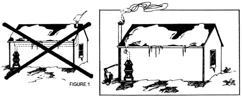

I've just been reading MOTHER NO. 24 with considerable interest (although I'm afraid I'm not one of your typical starry-eyed young readers bent on subsisting, solely on my own organically grown carrots). What caught my attention most was the section on alternative energy sources, and particularly A. Michael Wassil's article entitled "Stovepipe Power". This is a subject about which I have some knowledge, as I've burned both coal and wood to a greater or lesser extent for many of my 51 years . . . currently "greater" due to rapidly rising fuel oil prices. May I offer a few words of advice and warning?
I'm sure many of your readers live here in the Northern States. In these parts-and particularly in the Pacific Northwest-most of the available forest fuel is coniferous softwood. Such species-chiefly Douglas fir, Englemann spruce, ponderosa pine, larch and lodgepole or jack pine-all contain substantial amounts of volatile resins which are very difficult to burn efficiently and completely. In practice, complete combustion is not possible for the homeowner.
This fact makes some of Mr. Wassil's suggestions potentially disastrous for uninformed, inexperienced cabin dwellers whose only available fuels are these resinous woods. I'm particularly appalled by his Fig. 1, which illustrates a stovepipe running the length of the house up under the coiling. The temperature of such a stack's contents would drop so low before exiting into the open air that virtually ail the unburned distillate products would condense in the pipe . . . along with considerable unburned particulate carbon, or (in plain English) soot, I've seen a six-inch stovepipe three feet long choke down to an effective opening of only a couple of inches in less than two weeks when really poor wood was used.
A horizontal pipe as long as suggested in Mr. Wassil's article would have to be cleaned much more frequently than most people realize . . . and, believe me, the job makes one awful mess. If it's neglected, the great hazard is of course-a chimney fire. Such a blaze goes like a blowtorch, is quite hot enough to turn the stovepipe bright red and could burn the cabin down so fast you wouldn't believe it Carbon monoxide poisoning from insufficient draft is another danger.
Poor coal (any that burns orange and smoky) presents the same hazards as resinous woods. For Heaven's sake, MOTHER, warn your readers not to make installations like Mr. Wassil's Fig. 1 unless they have access to coal of excellent quality that gives off a blue and yellow flame . . . and not much of that!
If inferior fuels are used, the fire simply must be allowed to burn so hot that the high stack temperature will prevent condensation of the volatile products which escape combustion. It follows that capturing too much of the stovepipe's heat can only result in problems and dangers.
The only safe, sane and relatively trouble-free method of burning pine, spruce and fir woods is to design a heating system with [1] a proper masonry chimney capable of withstanding repeated fires in the flue and [2] built-in heat storage capability. I have just finished installing such a system, complete with hot water boiler and large insulated storage tank upon which thermostats in house and greenhouse can draw as required to warm baseboard fintube heaters. This is the only means I can think of to provide anything like an acceptable level of indoor temperature regulation. There's nothing cheap about an installation like mine, but it really works like a charm and is worth every penny and hour of labor I put into it.
Finally-while I'm at it-a few words about fireplaces: Most of them draw more warm air out of a house than they can put back in. An open hearth with a 12" X 12" flue can do this at the astonishing rate of 200 cubic feet of air per minute! Any such unit that isn't equipped with a Heatilator or similar steel liner and a tempered glass front should be kept closed up in the winter months . . . particularly if any heat is derived from oil, gas or propane heaters or furnaces.
Keep up the good work, MOTHER, but please pass on my warning . . . lest some ignorant homesteader find himself shivering in the snow in his nightshirt because he followed Mr. Wassil's advice.
|
 |
|
|